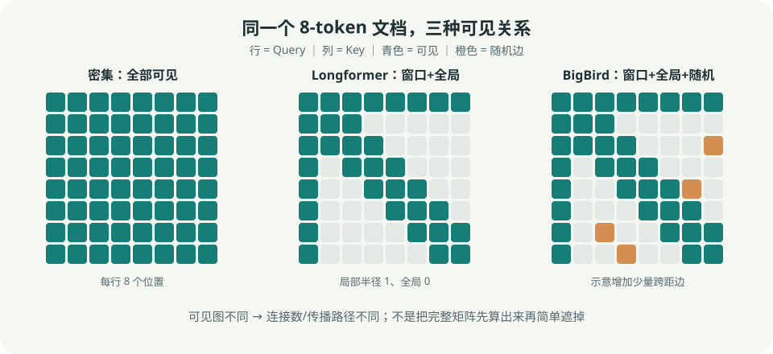

1. 为什么 4096 token 的文档让 Encoder 变贵
标准 Transformer Encoder 对每个 query token 计算所有 key token 的相关性。批大小 B、头数 h、长度 n、每头维度 d 时，Q、K、V 约为 [B,h,n,d]，分数矩阵是 [B,h,n,n]。长度翻两倍，存储完整 attention score 的位置数变四倍；实际吞吐还受 kernel、padding、带宽与前馈网络制约。
例如只计算一个 head 的位置对数量，n=512 时是 262,144，n=4096 时是 16,777,216，增加 64 倍。这个比较不是整模型显存或运行时间实测；FlashAttention 能改变中间矩阵物化方式，却不自动把密集 attention 的算术配对数量降为线性。
长文档的困难也不只有 GPU：截断会丢失文件尾部、跨段信息需要聚合、监督标签可能只对应少数关键句。Longformer 与 BigBird 提供的是结构化稀疏 attention，并不是自动解决所有文档推理任务。
2. Longformer：窗口内交流，少数位置负责全局
Longformer（Beltagy et al., 2020）将每层自注意力划成局部滑动窗口与按任务指定的全局 token。局部 token 只连接自己附近的 w 个位置；全局 token 与整个序列相互可见，因此可以把远处信息聚合到关键节点，下一层再广播。局部与全局的区分是注意力的可访问关系，不是 token 的词义类别。
分类任务常将 [CLS] 或任务专用位置设置为全局；问答任务可能把问题 token 设成全局。究竟哪些位置成为 global 必须由输入编码与任务配置明确决定，不能只把任意 token 叫“全局”。局部 token 在同一层通常无法直接读取远处另一非全局 token；经过多层或借助全局路径才可能交换信息。
Longformer 还有适配语言建模的 dilated sliding window 等配置，但不要把“窗口+全局”当作它唯一可能的 pattern，也不能把 Encoder 的 Longformer 与用于生成任务的 Longformer Encoder-Decoder（LED）混成同一个预训练目标。
3. BigBird：局部、全局、随机三个连边来源
BigBird（Zaheer et al., 2020）加入三类稀疏连接：相邻块/窗口的局部注意力，少量拥有广泛可见性的全局位置或块，以及跨越文档远端的随机注意力。随机边在给定种子与 block mask 下是可复现的稀疏图构造，不是每层都必须无约束地随机复制 token。
BigBird 论文在特定结构假设下给出稀疏 attention 表达能力与通用近似的理论分析，并给出长序列任务实验。它并没有证明任意稀疏 mask 都必然达到密集 attention 同等精度；可连接性、是否存在全局节点、层数、block 大小以及任务数据都很重要。官方参考实现通常采用 block-sparse 处理，更接近硬件合并访存需求，不应把“随机 token 采样”误说成实现的唯一形式。
4. 从“矩阵”而不是“模型名字”看稀疏化

attention mask 要区分两层语义：结构允许与输入有效。即使稀疏图允许某位置访问，也不意味着 padding 应参与 softmax；padding 仍应被排除。是否使用 causal mask 则由模型/任务决定，Longformer 的双向 Encoder 与自回归生成器不适用同一个未来可见性规则。
5. 复杂度：什么条件下才可以说“线性”
定义 n 为有效序列长度，w 为每个局部 query 的可见 key 个数，g 为全局位置数，r 为每个局部 query 的随机连接数。若 w、g、r 相对于 n 近似固定，并且稀疏 kernel 只计算允许的边，token-pair score 数量可以近似写为：
上式忽略全局行与列的交叠、block padding、头数和投影计算，是边数量的上界量级；真正 kernel 的 FLOPs、激活显存与 wall time 不会自动严格等于它。若 g 随 n 同比增长、w 随 n 增长，或者 kernel 仍先构造 dense mask 再乘 0，线性优势便可能消失。
从实际选型看，要同时记录 attention_window、global_attention_mask、最大位置数、滑动窗口在边界处的裁剪、有效 token 数及任务头输入。如果要跨多个 chunk 聚合多个文档片段，则需额外定义 chunk overlap 和跨 chunk 的监督/聚合逻辑。
6. 距离近不等于信息能直接交互
想象第 2 个 token 需要读取第 2000 个 token。在密集 attention 中，单层直接有一条 Q→K 边；Longformer 局部窗口没有这条直接边，但可以借助全局位置或经过多个局部层的信息传输。BigBird 则可能添加跨远处 block 的随机连接，缩短图中的路径。
注意这里的“可达”不保证模型学会使用该远程信息。每条路径经过 softmax 权重、残差与非线性；连接的存在是信息传输的必要图条件之一，而不是长程推理成功的充分证据。问答系统还需要能定位答案 span、保留跨句实体指代和页码/段落元数据。
7. 从论文公式走到可运行长文本系统
训练前先根据任务确定输出：文档分类是一个类别，抽取式问答是起止 token，生成式摘要还需要 decoder，不应拿 Longformer Encoder 的分类头直接输出摘要文本。输入切分时保存原文 offsets、文档 ID、段落和页码，避免错误地把答案截断或跨文档拼接。
内存审计需要分解为 embedding、QKV、局部分数、全局分数、FFN 激活、梯度/优化器状态和 padding。检验 global mask 不是全零、padding mask 不泄漏、每个实际 query 至少有一个有效 key；同时对不同输入长度（512、2048、4096 等）做真实 warmup 后 latency/p95/peak memory benchmark。
# 伪代码：标签语义与模型版本必须配套
tokens = tokenizer(document, truncation=True, max_length=4096)
global_mask = [0] * len(tokens["input_ids"])
global_mask[cls_index] = 1 # 分类任务的一种常见选择
# attention_mask: 1=真实 token；global_mask: 1=指定为全局
# 将两者分别传给支持该接口的 Longformer checkpoint
代码片段是输入契约示意，不依赖某个模型版本；真实工程需验证 special tokens、batch padding 和模型接受的参数名称，不能将它当作完整训练脚本。
8. 交互：一个 token 究竟能注意哪些位置
在八 token 的简化序列中，固定 query=4，选择不同 pattern。只有结构上允许的 key 才进入后续 softmax；分数大小和语义正确性都由模型训练决定。
Query=4 · 位置 0–7
密集 attention：query 4 可访问 0,1,2,3,4,5,6,7。 每层需要对所有有效 key 位置算 score；在 n 个位置上共有 n² 个配对。
9. 阅读原始论文时的三条核查原则
第一，论文报告的序列长度与硬件/实现版本不能脱离上下文：不同长文本 baseline 可能用不同 batch、优化和截断策略。第二，Longformer 的 global 注意力是任务指定，不等同于 BigBird 的 random block；BigBird 的理论性质依赖具体稀疏图构造。第三，任意“线性”说法都应注明固定窗口/全局/随机边假设与算子的实现，不要把渐近符号 O(n) 直接转换成特定机器的固定倍数提速。
适用边界：非常长的法律、医学或科研文档可以从结构稀疏受益，但如果任务需要逐字精确比对远端任意两个 token，过度局部化可能损害信息交换。选择 pattern 的第一目标应是任务证据，而不是为追逐论文中的“更长”而随意扩大 max length。
关键结论
- Longformer 使用局部窗口与任务指定的全局 token；BigBird 再加入随机远程边与 block-sparse 结构。
- 当窗口、全局和随机连接数相对 n 固定且算子真的稀疏计算时，配对数量量级可由 O(n²) 降到 O(n)。
- 稀疏边是连接约束，不是性能保证；应同时检查 padding、任务头、吞吐和信息可达性。